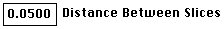

Distributed By: Virtual Labs
Precipitate Streaking Setup Dialog Box
PATH...{SAD}:Define Menu::Define Pattern...(Click on Full Streak Calcs Option)
The Precipitate Streaking Setup Dialog Box is activated from the SAD
Definition Dialog Box.
It helps the user set the method for calculation of the streaking patterns
generated from the shape and size of precipitate particles.
Precipitate Streaking Setup
When checked this causes Desktop to use a simple geometric
method for calculating streaking. Streaks are perpendicular to crystal
faces and inversely proportional to the through thickness at that face center.
When unchecked, Desktop uses a fourier transform/ Green's function methodology.
Resolution. in this case, is not an absolute value.
Rather, It refers to the number points which are calculated along a single
dimension. In the case, of the Quick Calc. method, this refers to the number
of points calculated for each face. For the full fourier method, this refers
to the number of points along each dimension, over the number of g-vectors
indictated.
As diagramed in SAD
Setup Dialog Box, these calculations work by determination of intensity
over a volume of space and then plotting a slice through the volume. Slice
thickness controls the number of potential elements which can be considered
for plotting. The goal is to have the slice thickness as then as possible
but to still have all projected points with some numerical value. The user
should start thin and gradually increase thickness. The thickness is given
in reciprocal Angstroms. Checking auto causes Desktop to attempt to optimize
the value.
is the thickness of a screen pixel in reciprocal Angstroms.
Use this value as a guide to setting Thickness Of Slice.
This value sets the volume of the calculated values.
g refers to g-vector. The larger the number, the greater the area of calculation
in reciprocal space. For example, for a fcc crystal looking down the [001]
zone axis, set the Number of g's to 2 for complete coverage. (This number
does not have to be an integer.)
Checking this will cause Desktop to plot a series of
slices taken perpendicular to the current beam direction, sliced at the
indicated:
. Starting at the origin, inserting a interger value
into sets the number of images generated by Desktop
Microscopist.
Author: J.ames T.
Stanley
 Desktop
Manual:Dialog Boxes
Desktop
Manual:Dialog Boxes
Distributed By: Virtual Labs
Last Updated:July 6,1996